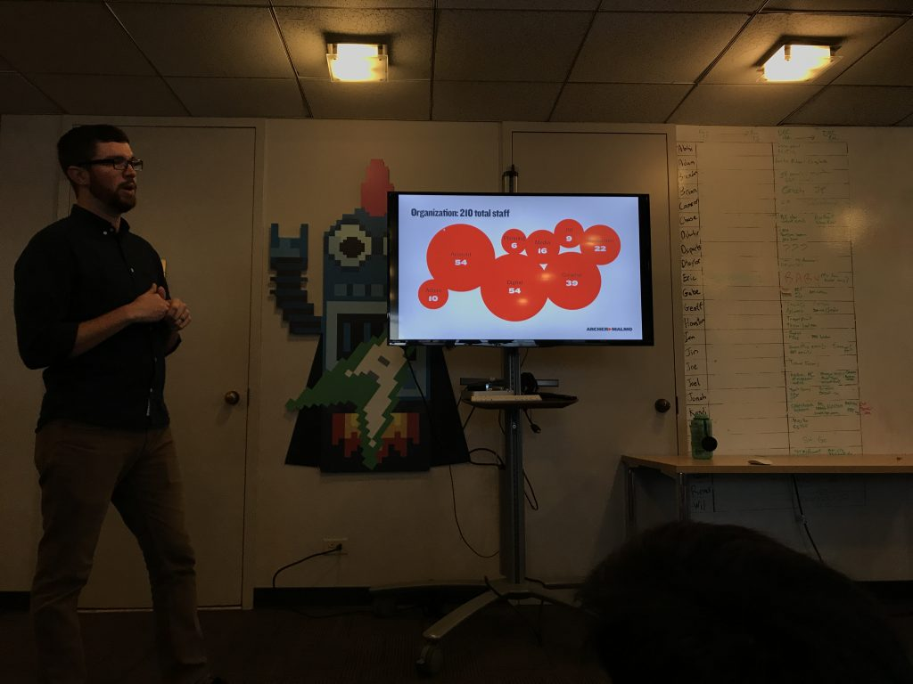
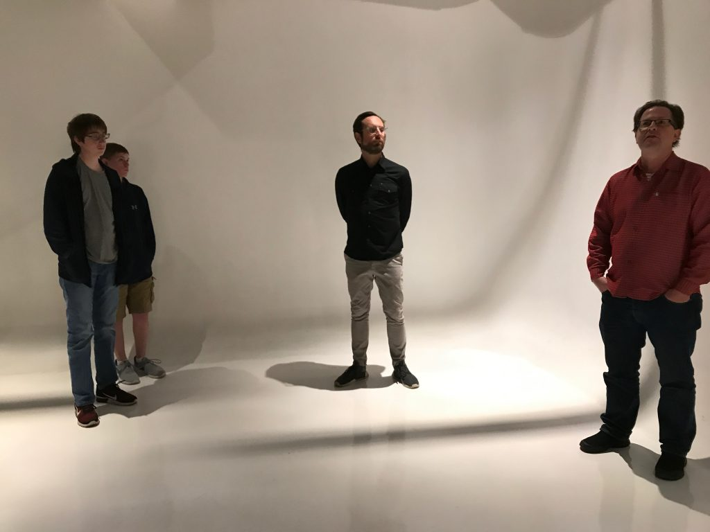

The Environment of Archer-Malmo seemed very relaxed and open with the workers being able to bring thier dogs and coming in to work whenever they were able to without having to worry due to paid time off. Also the couches in the workplace where the workers were able to sit down with each other and talked and just relax seemed great.The Environment is something similiar I would love to work in on the future.
I was able to learn that you didnt require a degree in computer science to be able to get a job in the tech industry as employers look more into your capablities rather than your degree and whats on paper. A website in a company like archer-malmo requires collaboration from different positions and jobs rather than just working on it all by yourself. I was also able ot learn and better imagine the feel and atmosphere of the work environment in this field.
I am very much interested in a job in this industry and field due to the openess of the work places and relaxed management where im able to feel like im managing myself. This might not be the case for all companies but atleast I'm able to know that i can find a job in the industry with similiar environment.
My favorite part of the trip was when we were just sitting down talking about the career especially the part where they talked about how they got into tech and Archer-Malmo itself. They seemed very excited to tell us their story.
I wish we were able to see around and meet more of the people there and were abke to listen to their stories and their everyday life. Maybe also meet the Cameron's dog :^).
 